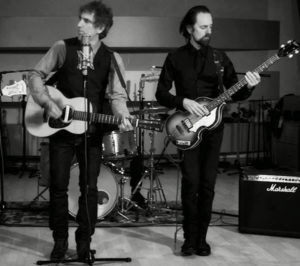

01
Escuela de Calor
Radio Futura fue un grupo musical de rock español de los años 1980 y 1990. Reunidos en 1979, tras un primer disco (Música moderna, 1980)
de cierto alcance enmarcado en la llamada Movida madrileña, y tras reestructurar su formación, iniciaron una carrera
de éxito con sucesivos discos durante la década de 1980 (La ley del desierto / La ley del mar, De un país en llamas y La canción de Juan Perro).
02

La Chica de Ayer
Nacha Pop es un grupo musical español de los años 80s, formado en medio de la entonces recién nacida movida madrileña. En su formación inicial participaron Antonio Vega y Nacho García Vega (guitarras y voces), Carlos Brooking (bajo) y Ñete (batería). Formado en 1978, tras desintegrarse el
grupo Uhu Helicopter, se disolvió diez años más tarde, aunque en 2007 resurgieron hasta 2009, año de la muerte de Antonio Vega.
03

Perlas ensangrentadas
Los Secretos es un grupo de música pop rock español fundado en Madrid y que ha desarrollado su carrera desde los años 80 hasta la actualidad. Se les ha relacionado
habitualmente con la movida madrileña, llegando incluso a realizarse documentales en RTVE. Ellos han
preferido siempre identificarse con los grupos surgidos bajo la influencia de la New Wave británica.
04
Déjame
Los Secretos es un grupo de música pop rock español fundado en Madrid y que ha desarrollado su carrera desde los años 80 hasta la actualidad. Se les ha relacionado
habitualmente con la movida madrileña, llegando incluso a realizarse documentales en RTVE. Ellos han
preferido siempre identificarse con los grupos surgidos bajo la influencia de la New Wave británica.
05

Salta
Tequila fue una banda de música rock madrileña fundada hacia 1976. Fue formada por los músicos Ariel Rot
(guitarra), Alejo Stivel (voz) ,Julián Infante (guitarra), Felipe Lipe (bajo) y Manolo Iglesias (batería). Fue una
de las bandas más populares en los primeros años de democracia en España.
06
Lobo Hombre en París
La Unión, rotulado también como LA UNIØN, fue un grupo español de pop, rock y New Wave, entre otros estilos musicales. El
grupo compuesto por Rafa Sánchez (vocalista), Luis Bolin, (bajista) y Mario Martínez (guitarrista) acompañados por Fermín Villaescusa
al piano y el guitarrista Mario Cea Martínez.
07

Hoy no me puedo levantar
Mecano fue un grupo español de música pop, activo entre 1981 y 1992, periodo al que hay que sumar una fugaz
reaparición en 1998, que duró apenas ocho meses a partir de la edición de un doble disco recopilatorio que incluía siete nuevos temas grabados para la ocasión.
08

Bienvenidos
Miguel Ríos Campaña (Granada, 7 de junio de 1944), conocido simplemente como Miguel Ríos, es un cantante y compositor de rock español, uno de los pioneros de este género en su país.
En activo desde los años 1960, cuando fue conocido como Mike Ríos, el Rey del Twist, alcanzó su mayor éxito con el
«Himno a la alegría», cuya versión en inglés «A Song of Joy» fue un éxito a nivel mundial.
09

En Algún Lugar
Duncan Dhu es un grupo musical español de rock originario de San Sebastián (Guipúzcoa, España) formado el 4 de agosto
de 1984 tras la fusión de los principales integrantes de los grupos Aristogatos y Los Dalton. Sus miembros originales fueron Mikel Erentxun
(cantante hasta entonces del grupo Aristogatos), Diego Vasallo (vocalista y bajista del grupo Los Dalton) y Juan Ramón Viles
(guitarra y batería de Los Dalton). Desde 1989 está compuesto por los dos primeros.
10

Devuélveme a Mi Chica
Hombres G es una banda de rock y pop rock española. La banda se crea cuando por casualidad,
coincidieron un día Rafa Gutiérrez y David Summers en los pasillos de Televisión Española, donde
tenían que hacer un trabajo de figuración en el programa "Aplauso". El nombre del grupo viene del film G-Men,
una película americana del cine negro de 1935 protagonizada por James Cagney, en la que los G-Men (Hombres G) eran
agentes del FBI. Desde entonces hombres g son hombres g.
11
Slowly
Luis Eduardo Aute Gutiérrez (Manila, Filipinas; 13 de septiembre de 1943-Madrid, España; 4 de abril de 2020)12 fue
un músico, cineasta, escultor, pintor y poeta español. Aunque fue principalmente conocido como cantautor, también destacó
como pintor y como director de cine. Hablaba español, inglés, catalán, francés, italiano y tagalo.
12
Pacto Entre Caballeros
Joaquín Ramón Martínez Sabina (Úbeda, Jaén; 12 de febrero de 1949), conocido
como Joaquín Sabina, es un cantautor, poeta y pintor español. Ha publicado diecisiete discos de estudio y
siete en directo y colaborado con distintos artistas cantando dúos y realizando otras colaboraciones. Se
estima que ha vendido más de diez millones de discos y también ha compuesto para otros artistas como Ana Belén, Andrés Calamaro o Miguel Ríos.
CopyRight Laura Mindán **AGM2 · AGM4** Mòdul 8 - Curs 2020-2021